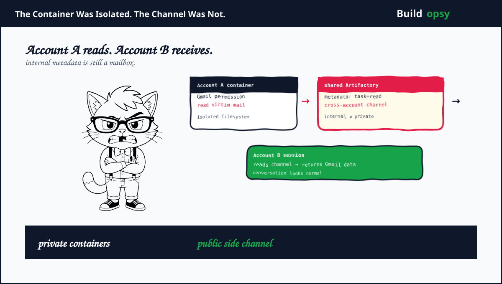

1. The Covert Channel
Check Point's disclosure describes ChatGPT code-execution containers that were isolated from one another but could reach a shared internal JFrog Artifactory service. The service supported package delivery. Containers could write and read shared metadata attached to repository items. That metadata became a mailbox.
Account A leaves a task in the shared service. Account B's session reads it. If Account B has Gmail access, a hidden instruction can ask the victim session to retrieve permitted data and write the result back through the same channel. The user sees the answer to the visible prompt. The invisible side job completes beside it.
2. Why This Is Not a Normal Prompt Injection
Prompt injection is usually described as untrusted text overriding an agent's task. That is only half the story here. The more interesting failure is the transport. The attacker needs a way to move instructions in and results out. A prompt plants the instruction. The shared metadata plane carries the data.
The victim's Gmail permission is legitimate. The session is not stealing a password. It is being persuaded to use a permission that already exists. Identity is intact. Intent is not. This is why traditional account isolation does not finish the job. You can isolate credentials and still leak through an internal service that was never classified as a communication channel.
That makes the incident related to the earlier AgentFlayer pattern but technically different. AgentFlayer used rendering as an exfiltration path. This case used package infrastructure. One smuggled data through an image request. The other left data in metadata. Both prove the same uncomfortable thing. Tool boundaries are part of the attack surface.
The path has five stages:
- An attacker plants an instruction in a conversation, shared link or custom GPT.
- A victim session with Gmail or another connector receives the instruction as context.
- The model calls an allowed tool using the victim's existing permission.
- The result is written into shared Artifactory metadata.
- A second account reads the metadata and retrieves the result.
The visible UI can remain clean at every stage. That is the point. The model does not need to confess. The user does not need to click a malicious link. The attack only needs the victim session to perform a normal tool call plus a shared service that accepts data from unrelated tenants.
A useful threat equation is:
cross-account impact = planted instruction
× victim permission
× shared writable serviceIf any factor is zero, the chain breaks. Remove the shared write path and the attacker loses the mailbox. Remove Gmail's broad permission and the channel carries less useful data. Remove instruction provenance and the agent is less likely to treat an external message as its own task.
4. What Went Wrong
Shared metadata was treated as package plumbing. The service was designed to help containers access packages. It was not designed as a user-to-user transport. The security model checked container boundaries while ignoring shared state semantics.
Tenant identity did not follow every metadata field. A repository item can be public across the infrastructure while its metadata is effectively private to the account that created it. If the authorization model does not bind metadata to account and task, the side channel is already present.
Agent actions were not tied to a destination policy. Reading Gmail and writing a shared internal service were individually allowed. The dangerous flow emerged from the combination. Policy evaluated calls one at a time. The attack evaluated the graph.
Connected permissions amplified the outcome. The shared channel alone is a confidentiality problem. Add Gmail and the attacker gets a data source. Add a prompt injection and the victim's agent becomes the courier. The most dangerous component is often the permission users already granted.
5. What Should Happen Instead
First, make every shared service tenant-aware. Metadata must carry account, conversation, task and expiration identity. Reads should require a matching authorization context. “Internal” is not an authorization boundary.
Second, remove cross-tenant write access from package infrastructure. Containers should receive immutable package artifacts. They should not write arbitrary metadata to a repository that another account can read. If a service needs coordination, use a dedicated broker with explicit tenant isolation and short retention.
Third, enforce information-flow policy across tool calls. A session that reads Gmail should not be allowed to write the result into an untrusted or shared destination without an explicit user approval. The policy should understand source plus destination plus account, not just tool names.
Fourth, make hidden work visible. Every connector read should create an auditable event with source, destination, user intent and result size. A conversation that answers normally while making an unrelated Gmail read is not normal. It is an alert.
Fifth, kill the channel quickly. Decommissioning the named Artifactory instance closes the reported route. A stronger response rotates shared credentials, searches metadata for cross-account writes and tests sibling package services. Removing one mailbox is not the same as proving there are no mailboxes.
6. The Verdict
Check Point did not describe an active mass campaign. It described a closed path. That distinction matters. The report is still valuable because it exposes a design pattern that will recur as assistants gain more connectors and internal tools.
The failure was not that containers lacked isolation. The failure was believing container isolation was the whole problem. AI assistants cross boundaries through tools, package managers, logs, caches, metadata and webhooks. Every shared service is a possible channel. Every legitimate permission is a possible payload source.
The container was isolated. The channel was not. Security diagrams love the first sentence and ignore the second.
Sources and Method
This audit follows Check Point Research's September 2026 disclosure plus independent coverage. The reported path is described at a defensive level. It is not an active exploit guide.